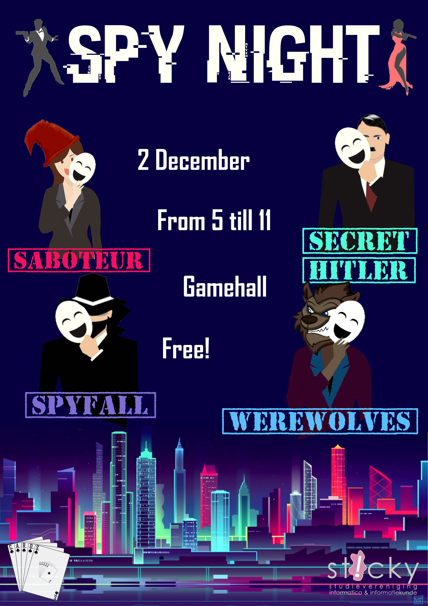
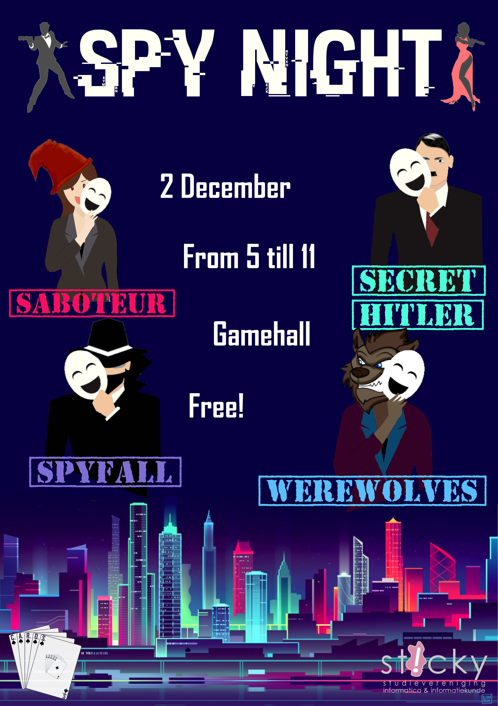

Voor mijn Master Thesis werkte ik mee aan het Shoulder-to-Shoulder project onder leiding van Dr. Sander Bakkes op de Universiteit van Utrecht. Dit project onderzoekt hoe het spelen met een flipperkast kan bijdragen aan zelfonthulling bij jongens. Mijn onderzoek richtte zich op het verkennen van mogelijke multiplayer-methoden en de cognitieve belasting die dit voor de spelers met zich meebrengt. Hiervoor voerde ik een within-subjects experiment uit en analyseerde ik de kwantitatieve resultaten. De inzichten uit mijn onderzoek leveren een waardevolle bijdrage aan het overkoepelende project en ondersteunen de ontwikkeling van methodieken die jonge jongens helpen zich makkelijker open te stellen via het flipperkastspel.


Choosiversity is een project ontwikkeld tijdens het vak Adaptive Interactive Systems. De applicatie is ontworpen als een spel dat aankomende studenten helpt bij het kiezen van een universiteit. Op basis van hun quizresultaten, gecombineerd met de keuzes en resultaten van eerdere gebruikers, doet de applicatie gerichte aanbevelingen voor universiteiten.
Komsomol Truth is een serious game die de impact van propaganda laat zien, met focus op de Russische autoritaire propaganda tijdens de oorlog met Oekraïne. De game toont hoe propaganda het denken en gedrag van burgers kan beïnvloeden en leert spelers kritisch omgaan met nieuws en online informatie.


 


Deze posters heb ik ontworpen voor activiteiten en evenementen van Sticky, specifiek voor de commissie C.A.R.D.S. Omdat het om spelletjesactiviteiten ging, heb ik gekozen voor een speelse en informele stijl die goed bij het thema past.
Een van mijn recente hobbyprojecten is het herontwerpen van het kaartspel Skull King, waarbij ik mijn vrienden en mijzelf heb afgebeeld als piraten. Dit project laat perfect zien wat ik momenteel kan op het gebied van Photoshop en GIMP.